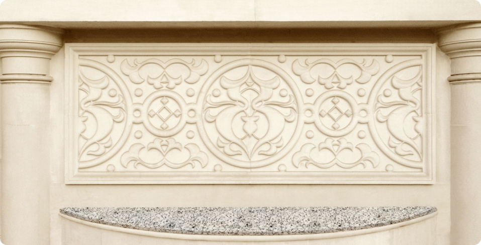

A Thought Before The Stone
They say architecture reflects its creator. But Advait doesn’t reflect, it elevates. Born not out of ambition, but a desire to create something eternal, it is not merely a structure, it is a sentiment.

A modern-day palace, imagined with reverence and restraint.
Inspired by the grace of heritage, yet unapologetically rooted in the present.
Every arch, every corridor, every breath of light was shaped to echo beauty that doesn’t need to explain itself.
Advait is for those who know beauty when they feel
it not when they’re told.
it not when they’re told.

This Is Not Grandeur Shouting; It Is Grace
Whispering.